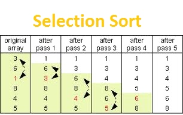

Selection Sort
Definition
Selection Sort, like Bubble Sort, is a relatively easy algorithm to understand and implement; however it is more efficient than Bubble Sort. When operating on large lists, the algorithm becomes less efficient; however in various circumstances discussed below, the algorithm can be regarded as the optimal choice.
Selection Sort essentially splits an array of numbers into two sub-lists, one sorted and one unsorted. Before the algorithms runs, the entire array is un-sorted. When the algorithm runs, it selects the highest element in the list, and places it at the start of the unsorted list. After this, each list changes - the sorted sub-list grows, and the un-sorted list shrinks. Eventually the entire array becomes the sorted list.
Implementation
Selection sort works as follows:
- Locate the minimum element of the unsorted array.
- Once located, assign the index of the minimum element into a minimum index variable.
- Swap the minimum element into the first position within the array.
- Continually sort the remaining elements of the array, whilst excluding the previously sorted elements.
- Repeat steps until entire array is sorted.
Example
Selection Sort Animation
Functions
Selection Sort is implemented by the following function:
- selection();
This function locates the minimum element within the array and swaps it with the element in the first position. The function selects the next element and locates the next minimum element within the array, whilst ignoring the previous sorted elements. The element is swapped with the element of the minimum index position.The remaining values are sorted using the same technique until all elements within the array are correctly sorted.
Pseudocode
function selection ( array arr, size ){
for index_1 ( 0 to size of array – 1 )
minimum = index_1
for index_2 ( index_1 to size of array )
minimum = index_2
swap ( index_1, minimum)
}
Complexity
The complexity of selection sort is O(N ^ 2). Selection sort possesses the same complexity as bubble sort; however it performs greater than bubble sort. The computational complexity of selection sort could be improved to O(N log N) by the use of heap sort. Heap sort improves the selection sort algorithm by using an implicit heap data structure, which will increase the speed of locating and removing the next lowest element within the array.
Advantages of Selection Sort
Selection sort is one of the most simplistic sorting algorithms to implement. As it is an in-place sorting algorithm, it does not require any additional storage space. This greatly improves the memory usage required by the sorting algorithm.
Disadvantages of Selection Sort
Selection sort’s computational time complexity contributes to its disadvantages. Due to selection sort having a complexity of O(N ^ 2), it results in a poor performance upon a large array with unsorted elements. This is usually the reason why this sorting algorithm is rarely used in large applications.